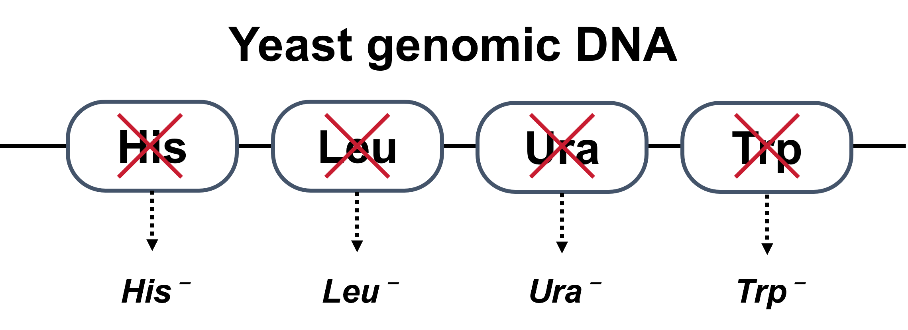
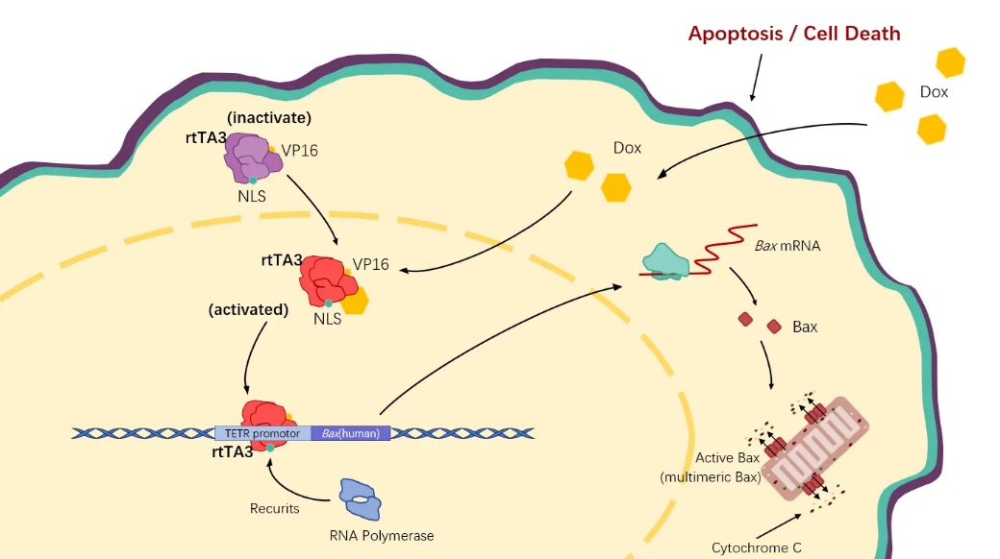
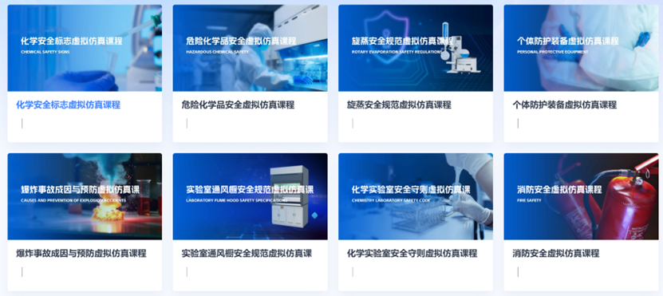
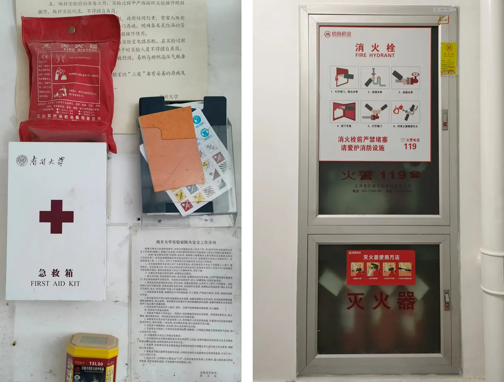
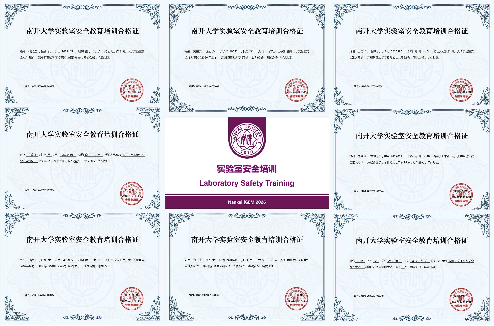
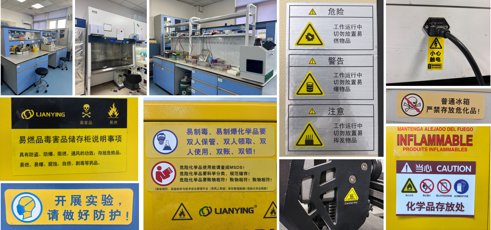

Project Safety
Biosafety is an essential component of project design. For our Nemaklear project, we carried out safety design in three main aspects: biomaterial safety, laboratory operation safety, and productization & application safety.
Biomaterial Safety
In our project design, we adopted a dual strategy combining auxotrophic markers and suicide genes to strengthen our biosafety control system.
First, we used yeast with four auxotrophies as the chassis strain for this project (Figure 1). After a series of genetic modifications, the engineered yeast cannot survive in environments lacking histidine and leucine. Therefore, the engineered yeast constructed in our project can only survive under laboratory conditions, which effectively prevents the environmental escape of genetically modified yeast.

Secondly, we adopted the previously designed engineered yeast suicide switch, where the doxycycline-inducible Tet-On system drives Bax-mediated mitochondrial apoptosis (https://2025.igem.wiki/nku-china/safety-and-security). It achieves strict and precise control of cell survival time and has the characteristics of "leak-free, high-sensitivity" (Figure 2).

Laboratory Operation Safety
All experimental operators of this project have received specialized laboratory safety training at Nankai University and strictly follow standard operating procedures, including wearing full personal protective equipment (PPE) and conducting experiments inside biosafety cabinets. All experimental waste is disposed of in accordance with regulations for biohazardous waste to prevent leakage of biological materials.

Productization & Application Safety
For productization and field application safety, our final product is a kit equipped with freeze-dried yeast test strips. Freeze-dried yeast powder can be transported at room temperature without losing activity. Besides, the risk of leakage and contamination from this type of yeast is relatively low.
The kit features an easy operation workflow, so field users can operate following instructions without professional microbiology training. The test strip substrate physically immobilizes yeast cells, further limiting the spread of engineered yeast.
After use, test strips and supporting consumables can be collected and inactivated uniformly, minimizing the risk of engineered yeast escaping into the natural environment.
Lab Safety
Laboratory safety is a core component of the iGEM project. We have implemented multiple measures to ensure biosafety protection for every participant working in our iGEM laboratory.
Safety Regulations
All laboratories supporting our iGEM project fall under the university’s strict multi-dimensional safety supervision system. They consistently pass regular comprehensive assessments and unscheduled random audits, laying a solid foundation for safe experimentation. Inspections cover all key operational elements: routine maintenance and standardized equipment use, compliant water/electrical piping with routine leak tests, properly maintained fire equipment, unblocked emergency routes, and intact emergency showers and eyewash stations. Such rigorous controls ensure our infrastructure and management meet and surpass applicable safety codes, forming a stable, compliant safety framework to advance our synthetic biology work.

Safety Education
Before the official launch of wet-lab experiments, our faculty advisor and laboratory safety officer jointly delivered systematic laboratory safety training for the team. The training covered general laboratory safety guidelines, biosafety requirements and chemical management regulations. Special sessions were arranged for hazardous equipment used in our project, such as autoclaves, high-speed centrifuges and high-throughput homogenizers, focusing on standard operating procedures, hazard identification, emergency response protocols and prohibited operations. Through this comprehensive safety education, all experimental members systematically learned and mastered the complete set of laboratory safety regulations. They are able to actively identify potential safety hazards in experimental workflows and establish solid biosafety awareness to ensure safe and controllable wet-lab operations throughout the project.
Meanwhile, all team members participating in experiments have taken and passed the 2026 laboratory safety access examination of Nankai University and obtained corresponding qualification certificates. We achieved 100% qualified access, and all members are eligible to carry out wet-lab experiments.

Note: Due to space limitations, only the certificates of partial members are displayed here. All team members have passed the assessment.
Daily Management
Senior students are appointed as laboratory safety officers. They continuously remind all researchers of safety precautions during experiments and urge researchers to develop good experimental habits. Safety warning signs and detailed operation instructions are posted on all laboratory instruments, providing effective hazard alerts.

Meanwhile, the laboratory adheres to the highest safety standards and adopts meticulous measures to prevent the spread of hazardous chemicals and biomaterials. All experimental waste, including discarded microbial cultures, chemicals and consumables, is strictly sorted, inactivated and collected centrally. These wastes are managed by designated personnel of the school and sent to qualified institutions for standardized disposal, which eliminates environmental pollution and biosafety risks and ensures safe and compliant scientific research.